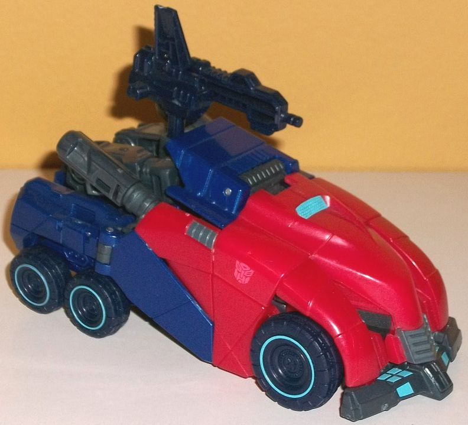
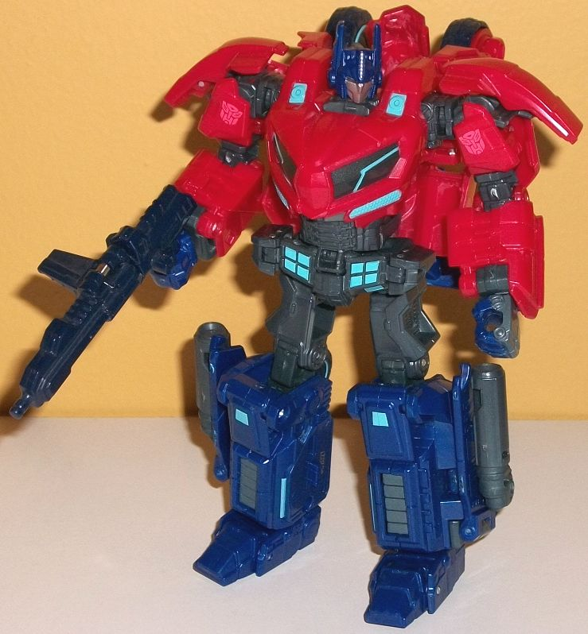
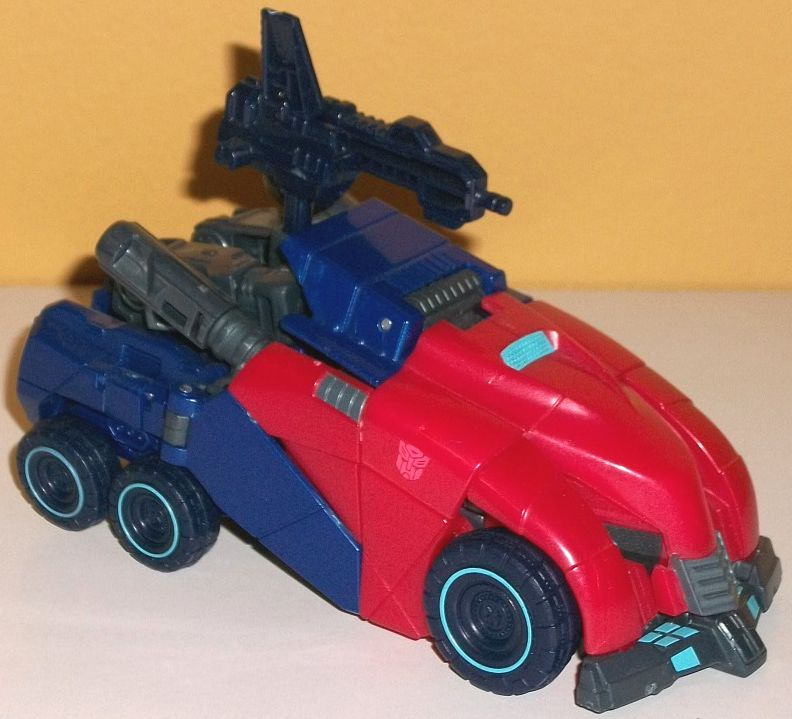
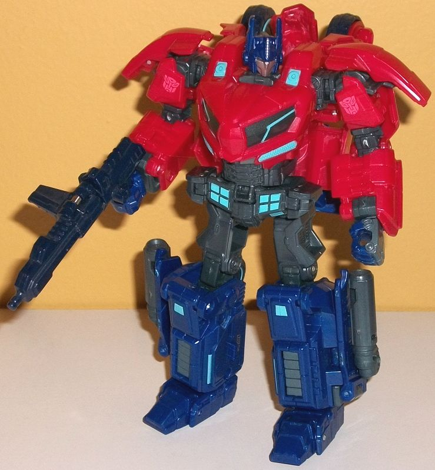
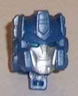
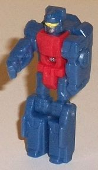
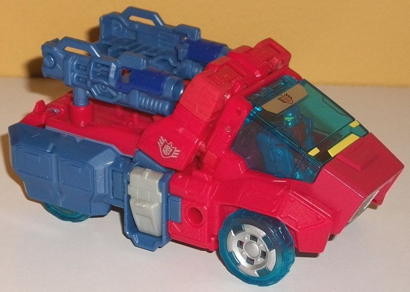
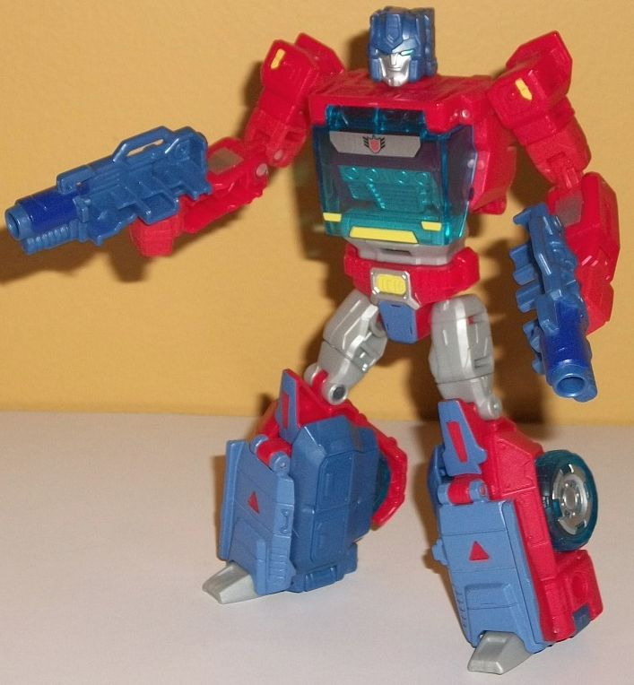

 
Size : Deluxe
Difficulty of Transformation : Hard
Color Scheme : Dark milky blue, milky red, dark milky bluish gray, and some bluish black, light electric blue, and silver
Individual Rating : 8.0
Allegiances
: Autobot
Set Price
: $30 (U.S.)
Overall Rating
: 8.6
(NOTE: Because this set is composed of repaints,
this is not a full-blown review. This mainly covers any changes made to
the set and the color scheme, and merely compares it to the original versions
of these molds. For a review on Cybertronian WfC Optimus Prime-- the mold
used for this Optimus Prime--go
here
. For
a review on Titans Return Sergeant Kup w/ Flintlock-- the mold used for
Orion Pax--go
here
.)
 Optimus
Prime
Optimus
Prime


Size
: Deluxe
Difficulty of Transformation
: Hard
Color Scheme
: Dark milky blue, milky
red, dark milky bluish gray, and some bluish black, light electric blue,
and silver
Individual Rating
: 8.0
This version of Optimus
Prime, at a first glance, is quite similar to the original "War for Cybertron"
release of this mold, and in general the color breakup is certainly similar;
the blues are blue, the grays are gray, the reds are red. The main differences
have to do with the shades of the colors and the paint app locations. The
plastic colors themselves are a little bolder than on the original; the
red is more of a medium red, possibly a bit of a cherry-red shade, compared
to the darker red of the original. The dark blue is still dark blue, but
not metallic-- it's milky instead this time around, and a few shades lighter
as well. The gray has a decidedly bluish tint to it now, as does the black
on the tires and gun-- it all complements the blue quite nicely, and in
general I find the color scheme to be a SLIGHT improvement over the original.
As for the paint apps, most of the light red paint apps on the original
have been replaced with light electric blue on this one-- this includes
the wheel "rings", the waist/front bumper details, thin stripes on the
front of the lower legs, the bit on top of the vehicle hood, and bits on
the kneecaps and upper chest. Compared to the other versions which just
had silver windows, this version has nifty black windows with light blue
lines going through them-- a definite visual improvement, there. There's
some regular silver on Optimus' faceplate and head, but most of the rest
of the "silver" is a paint shade identical to the dark bluish gray plastic
color. This bit of paint is used on small panels on the side of the vehicle
mode; on the front grill of the vehicle mode; on Optimus Prime's hands
(minus the fingers); and on the vents on the lower legs. There's also a
light red Autobot symbol painted on each side of the vehicle. Of course,
with some new paint apps, some of the original's paint is also missing
here, such as anything on the interior of the wheels or anything on the
top blue part on the vehicle mode.
No mold changes have
been made to this version of Optimus Prime.
 Orion
Pax
Orion
Pax




Size
: Deluxe
Difficulty of Transformation
: Medium
Color Scheme
: Moderately light pale
blue, red, light milky gray, and some transparent blue, yellow, silver,
light metallic silver blue, and dark glossy blue
Individual Rating
: 9.1
Orion Pax is (mostly)
a straight redeco of Kup, but in Optimus Prime-y colors. Most of the front
and top of the truck/upper body of the robot mode is a pretty straightforward
shade of red, while the lower legs, sides of the truck mode, guns, and
head are a fairly light, pale blue-- nearly pastel. This helps differentiate
Orion a bit more from the darker-colored Optimus Prime toy in this 2-pack,
and the two major colors complement and contrast against each other fairly
well. (That said, making the blue a shade or two darker would have looked
a little better, I think.) There's also, unfortunately, that very bland
shade of light milky gray plastic used on Orion, though it's only really
visible in robot mode, on the waist, upper legs, and toes. There's a pretty
nifty bit of transparent blue plastic used for the main cockpit and, surprisingly,
the wheels as well. The wheels look especially cool, with silver paint
on their hubs. There's also silver on Orion's face, the Titan Master's
face (he's unnamed), the waist, the front grill, the lower arms, and on
a strip across the chest/cockpit window. This strip contains an Autobot
symbol surrounded by what looks very similar to an Elite Guard symbol,
though it could also be a "cop" symbol, given the shield around the Autobot
symbol and the fact that Orion Pax was a cop in the IDW comics. So... dual
homage, perhaps? This same symbol is also painted in silver on the sides
of the vehicle mode, behind the front section. There's a decent amount
of yellow highlights on Orion Pax as well-- small bits on his robot shoulders,
faux "headlights" on the front of his cockpit window, the "buckle" detail
on his waist, and on his Titan Master's visor in robot mode. Finaly,
there's a few pale blue paint apps on some places like his knees and waist
to help keep certain parts one consistent color or just vary up the colors
more (particularly in robot mode), and some nice darker, glossy blue on
the guns that serves as a nice complementary color. Overall I really like
how much they varied up the color scheme despite it being a well-known
and well-worn basic color scheme overall, and the variety in robot mode
in particular looks nice. Unfortunately, what makes me rate Orion Pax below
Titans Return Kup is the fact that, due to paint, the side panels on the
front of his vehicle mode don't peg in all the way, and this is quite annoying/ugly
as this is a central point of finishing the transformation. This really
shouldn't have been overlooked.
The one mold change
made to Orion Pax is the new face for the Titan Master-- it's definitely
very much in line with Orion Pax's traditional face, with some Optimus-y
ear bulbs and antennae on the sides (though not as long as on a full-fledged
Optimus Prime toy, which somehow makes him look younger), and a center
vent on his forehead. His face is faceplate-less, with a regular mouth,
nose, and chin strap painted silver, and light metallic silvery blue eyes.
I wish some silver paint was put on his forehead vent, but otherwise it's
a pretty good headsculpt. (In the Titan Master's robot mode, the color
scheme is quite basic, with a red body and pale blue appendages and a head--
the paint on the Titan Master's tiny head is appreciated, though, as painted
Titan Master robot modes are all too rare.)
The Optimus Prime/Orion
Pax "Tribute" set is an easy recommendation for Optimus fans, particularly
if you don't have the Prime mold used for this set. Both are fairly solid
molds, and look pretty good as a "proto" Optimus Prime and a full-blown
Cybertronian Prime. If you have the original Cybertronian Optimus Prime
however, this set is probably a pass, as this version isn't different enough
from the original to justify an additional purchase, even at the discounted
price. This is mainly because Orion Pax-- though a great idea-- has an
alt mode that doesn't fit together all that well because of paint, and
thus I'd recommend Kup more than him, so don't get the set just for Pax.
Reviews by Beastbot